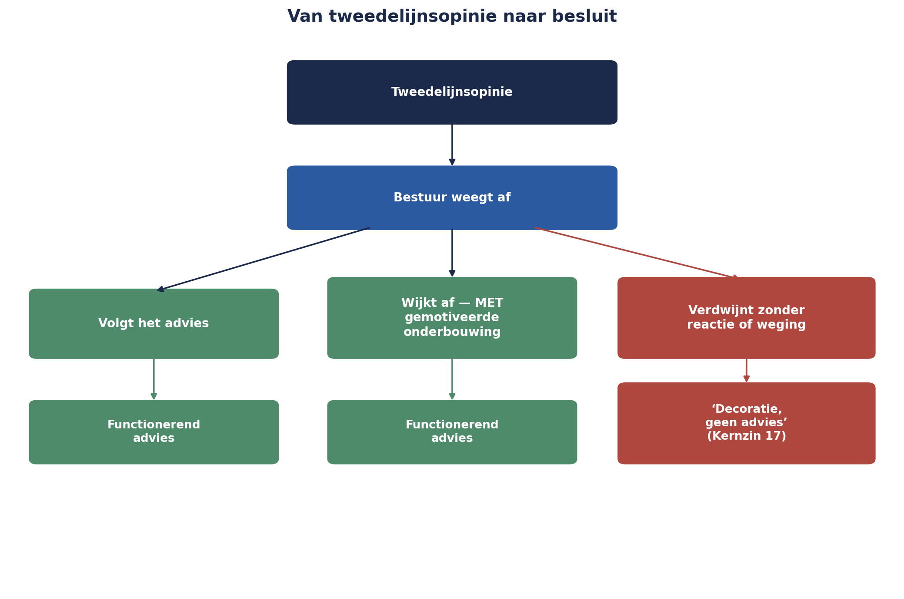

Cursus Risicomanagement · Niveau 3 (DNB-geschiktheid sleutelfunctie) · Deel 24 van 30
Deel 24 — Strategisch risico en de sleutelfunctie tijdens de transitie
Zes weken na haar aanstelling levert Sanne Bakhuis haar eerste formele stuk als kandidaat-sleutelfunctiehouder risicobeheer: een tweedelijnsopinie over het transitieplan voor de Stelselovergang, gericht aan het bestuur van Meridiaan Pensioen. Dit deel behandelt wat strategisch risico onderscheidt van operationeel risico, en wat DNB — in haar good practice over de sleutelfunctie risicobeheer tijdens de Wtp-transitie — van een sleutelfunctiehouder in deze rol verwacht.
5secties
±1,5uleestijd + werkboek
5controlevragen
3DNB-elementen
Positionering. Niveau 3 bereidt niet voor op een examen maar op de DNB-geschiktheidstoetsing voor de sleutelfunctiehouder risicobeheer — een beoordeling van opleiding, kennis, werkervaring en competenties, geen meerkeuze-examen. Dit materiaal is geen vervanging van de officiële eisen en beoordelingskaders van De Nederlandsche Bank; raadpleeg bij een daadwerkelijke sleutelfunctievervulling altijd de actuele eisen van DNB zelf. Informatie in dit materiaal is geverifieerd in augustus 2026 en kan wijzigen.
Niveau 3: 23 Risicomanagement onder toezicht → 24 Strategisch risico en de sleutelfunctie tijdens de transitie (hier) → 25 Operationeel risico → 26 Financieel risico voor niet-actuarissen → 27 Scenario's, stresstesten, ORSA/ERB en modelrisico → 28 Ethiek en de rol onder druk → 29 Casuïstiek-marathon → 30 Masterproef
01
Het eerste advies
⏱ 8 min
Zes weken na haar aanstelling levert Sanne Bakhuis haar eerste formele stuk als kandidaat-sleutelfunctiehouder risicobeheer: een tweedelijnsopinie over het transitieplan voor de Stelselovergang, gericht aan het bestuur. Dit is geen risicoregisterregel en geen escalatie — het is een nieuw soort document, met een eigen gewicht.
Dit deel behandelt twee dingen die samen dat gewicht bepalen: wat strategisch risico precies is, en wat DNB, in haar doorlopend bijgewerkte good practice over de sleutelfunctie risicobeheer tijdens de Wtp-transitie, van een sleutelfunctiehouder in deze rol verwacht.
Aan het eind van dit deel kunt u:
het onderscheid tussen strategisch en operationeel risico toepassen aan de hand van de vuistregel uit dit deel;
de drie elementen benoemen die de DNB good practice van de sleutelfunctie risicobeheer tijdens de transitie verwacht;
uitleggen wat Kernzin 17 betekent voor de waarde van een tweedelijnsopinie;
het verschil aanwijzen tussen strategisch risico en ondernemingsrisico;
de opbouw van Sanne's eerste tweedelijnsopinie benoemen.
02
Strategisch risico: de COSO-koppeling, volledig
⏱ 14 min
In deel 2 (niveau 1) werd COSO ERM 2017 kort behandeld als vergelijkingskader, met de belofte dat de koppeling tussen risico en strategie in latere delen zou terugkeren. Dit is dat moment.
Strategisch risico is risico dat de doelstellingen van de organisatie als geheel raakt — niet een project, niet een programma, maar de vraag of Meridiaan haar bestaansrecht en positionering op de langere termijn behoudt. Het onderscheid met operationeel risico (deel 25) is niet altijd scherp, maar een vuistregel helpt:
De vuistregel
Operationeel risico raakt of iets goed wordt uitgevoerd; strategisch risico raakt of het juiste wordt nagestreefd.
Voor de Stelselovergang is dit onderscheid concreet. Een verkeerd geconfigureerde conversieroutine (deel 1-2, niveau 1 en 2) is operationeel risico. De vraag of Meridiaan, als laatste transitiegroep, haar concurrentiepositie ten opzichte van eerder overgestapte uitvoerders behoudt — bijvoorbeeld omdat vroege overstappers een reputatievoorsprong hebben opgebouwd — is strategisch risico.
COSO's koppeling is hier precies: risicohouding hoort een vraag te zijn die je beantwoordt bij het vaststellen van de strategie, niet erna. Voor Meridiaan betekent dit dat de keuze om als laatste transitiegroep over te stappen — een strategische keuze die al vóór Sanne's aanstelling is gemaakt — zelf een risicobeoordeling had moeten krijgen, niet alleen de uitvoering ervan.
Controlevraag
Uit Werkboek deel 24, Opdracht 24.1 — Strategisch of operationeel?
1Vier risico's uit de casus: (a) "Onze conversieroutine faalt bij 2% van de dossiers door een technische fout." (b) "We overwegen niet mee te gaan in de vroege transitiegolf, wat ons op termijn een minder aantrekkelijke uitvoerder kan maken voor nieuwe werkgeversklanten." (c) "Een van onze testers is voor twee weken ziek." (d) "We baseren ons transitiebeleid op een aanname over toekomstige rentestanden die door drie van de vier grote uitvoerders inmiddels is losgelaten." Welke zijn strategisch, welke operationeel — en waarom?Toon antwoord
a. Operationeel — raakt of iets (de conversie) goed wordt uitgevoerd. b. Strategisch — raakt de positionering en het langetermijnbestaansrecht van de organisatie, niet de uitvoering van één taak. c. Operationeel, en op zichzelf klein — een uitvoeringsrisico zonder strategische lading. d. Strategisch — het gaat over de vraag of het beleid zelf (het "juiste nastreven") nog houdbaar is, niet over de uitvoering ervan. Discussiepunt bij d: deze aanname laat zien dat een aanname die stilzwijgend in de strategie zit verwerkt, zelf een strategisch risico kan worden zodra de omgeving verandert — vergelijkbaar met "elke aanname is een onbeheerd risico" uit deel 1 (niveau 1), nu op het hoogste niveau toegepast.
03
De DNB good practice, concreet
⏱ 20 min
DNB publiceert en werkt doorlopend bij: een good practice specifiek over de rol van de sleutelfunctie risicobeheer tijdens de transitie naar het nieuwe pensioenstelsel. Drie elementen zijn direct relevant voor Sanne's eerste advies.
Plausibiliteitscontrole van modellen en berekeningen
DNB noemt expliciet dat de sleutelfunctie risicobeheer een rol kan spelen in het controleren van de opzet en uitvoering van de plausibiliteitscontrole op de modellen en berekeningen die aan de transitie ten grondslag liggen — niet door de berekeningen zelf over te doen (dat is het werk van de actuariële functie), maar door te toetsen of de aannames en de gehanteerde methode plausibel zijn. Dit is exact de houding uit de goedgekeurde opzet van deze cursus voor niveau 3: het model bevragen, niet bouwen — een principe dat in deel 26 verder wordt uitgewerkt.
Adequaatheid van de besluitvorming
De good practice verwijst naar artikel 46b, eerste lid, onder a, van het Besluit uitvoering Pensioenwet, dat eist dat de besluitvorming rond de transitie aantoonbaar adequaat is — een zorgvuldig, navolgbaar proces, niet alleen een correcte uitkomst. Sanne's advies moet daarom niet alleen ingaan op de inhoud van het transitieplan, maar ook op de kwaliteit van het proces waarmee het tot stand is gekomen.
Rechtstreekse rapportage aan het bestuur
DNB benoemt als goede praktijk dat de sleutelfunctie risicobeheer periodiek en rechtstreeks rapporteert aan het bestuur, met een inhoudelijke, niet-marginale beoordeling — geen simpele toets of processtappen zijn doorlopen, maar een oordeel vanuit risicoperspectief.
Kernzin 17 van de cursus
Een tweedelijnsopinie die het bestuur ongemotiveerd naast zich neerlegt, was geen advies — het was decoratie.
Dit laatste punt verdient uitleg. DNB stelt vast dat een goed functionerend bestuur de opinies en adviezen van de sleutelfunctiehouder "aantoonbaar meeweegt" in de besluitvorming. Dat betekent niet dat het bestuur elk advies moet volgen — het betekent dat als het bestuur ervan afwijkt, dat afwijken navolgbaar gemotiveerd moet zijn. Een advies dat zonder enige reactie in een la verdwijnt, heeft dezelfde functie gehad als geen advies — precies zoals Kernzin 1 (deel 1, niveau 1) stelde dat een register dat nooit een besluit verandert, niet heeft gewerkt.

Figuur 24-1 — een stroomschema: tweedelijnsopinie → bestuur weegt af → besluit ofwel volgt het advies, ofwel wijkt af mét gemotiveerde onderbouwing — met een gemarkeerd, foutief pad waarbij het advies zonder reactie verdwijnt, gelabeld "decoratie, geen advies".
Controlevragen
Uit Werkboek deel 24, Opdracht 24.2 en 24.3 — de drie elementen van de good practice, en advies of decoratie
1Drie activiteiten van een sleutelfunctiehouder: (a) Sanne toetst of de gehanteerde sterftetafel-aannames in de transitieberekening redelijk zijn, zonder de berekening zelf over te doen. (b) Sanne stelt vast dat een belangrijk besluit is genomen zonder dat alternatieven ooit schriftelijk zijn overwogen. (c) Sanne presenteert haar bevindingen rechtstreeks aan het voltallige bestuur, niet via een tussenlaag. Welk van de drie elementen uit deze sectie is telkens aan de orde?Toon antwoord
a. Plausibiliteitscontrole — precies het voorbeeld uit de reader (sterftetafel-aannames), model bevragen zonder het zelf te bouwen. b. Adequaatheid van de besluitvorming — een procesgebrek, gekoppeld aan art. 46b Besluit uitvoering Pw. c. Rechtstreekse rapportage — direct aan het bestuur, geen filtering onderweg.
2Twee scenario's: (a) het bestuur ontvangt Sanne's advies, bespreekt het uitgebreid, besluit op één punt af te wijken, en legt in de notulen vast waarom. (b) het bestuur ontvangt Sanne's advies, plaatst het "ter kennisgeving" op de agenda zonder inhoudelijke bespreking, en gaat door met het oorspronkelijke plan. Is dit een advies dat functioneerde, of "decoratie" in de zin van Kernzin 17?Toon antwoord
a. Functionerend advies. Het bestuur weegt af, mag afwijken, maar doet dat aantoonbaar gemotiveerd — precies wat Kernzin 17 vereist. b. Decoratie. Geen inhoudelijke weging, geen motivering bij het niet-volgen — het advies heeft geen enkel besluit veranderd, ongeacht de kwaliteit van de inhoud. Het verschil zit niet in of het advies wordt gevolgd, maar in of het aantoonbaar is meegewogen: scenario a kan uitkomen op dezelfde uitkomst als scenario b, en toch een functionerend advies zijn — het is het proces, niet de uitkomst, dat het verschil maakt.
04
Strategisch versus ondernemingsrisico
⏱ 10 min
Een laatste onderscheid: ondernemingsrisico (in de bredere COSO-taal soms "enterprise risk" genoemd) is breder dan strategisch risico alleen — het omvat de volledige verzameling risico's die Meridiaan als geheel raken, over strategisch, operationeel, financieel en compliance-categorieën heen, geaggregeerd tot één beeld. Strategisch risico is daarbinnen één categorie, zij het een bijzondere: het is de categorie die het langst vooruitkijkt en het diepst met de bestaansreden van de organisatie is verweven.
Voor Sanne's eerste advies betekent dit een gelaagde opbouw: eerst het strategische kader (de keuze om als laatste transitiegroep over te stappen, en de risico's die daarmee samenhangen), dan de operationele en financiële risico's die daaruit voortvloeien (behandeld in deel 25 en 26), samengebracht tot één ondernemingsbreed beeld — een directe toepassing van de aggregatietechnieken uit deel 17 (niveau 2), nu op het hoogste niveau van de organisatie.
Controlevraag
Uit Werkboek deel 24, Zelftoets vraag 6
1Wat is het verschil tussen strategisch risico en ondernemingsrisico?Toon antwoord
Strategisch risico is één categorie — het langst vooruitkijkend, het diepst verweven met het bestaansrecht van de organisatie. Ondernemingsrisico is de volledige, geaggregeerde verzameling risico's over alle categorieën heen: strategisch, operationeel, financieel en compliance.
05
Sanne's eerste tweedelijnsopinie
⏱ 16 min
Het advies dat Sanne indient, volgt de structuur die uit dit deel voortvloeit:
Strategische context: de keuze om als laatste transitiegroep over te stappen, met de risico's die specifiek uit die volgordelijke positie voortvloeien (bijvoorbeeld: minder tijd om van de ervaringen van andere uitvoerders te leren, maar ook meer tijd om hun fouten te vermijden — een tweezijdig risico, in lijn met de kansen-en-bedreigingen-behandeling uit deel 6, niveau 1).
Plausibiliteitsoordeel over de transitiemodellen: niet een herberekening, maar een toetsing van de aannames waarop de actuariële functie haar berekeningen heeft gebaseerd.
Beoordeling van de adequaatheid van het besluitvormingsproces zelf: is elke stap navolgbaar, zijn alternatieven overwogen, is er voldoende tijd genomen op de juiste momenten?
Een expliciete vraag aan het bestuur — in lijn met Kernzin 13 (deel 19, niveau 2): dit advies eindigt niet met een samenvatting, maar met een concreet verzoek om een gemotiveerde reactie op drie specifieke punten.
Samenvattend: strategisch risico raakt of het juiste wordt nagestreefd (in tegenstelling tot operationeel risico, dat raakt of iets goed wordt uitgevoerd); COSO's koppeling tussen risico en strategie, kort geïntroduceerd in deel 2 (niveau 1), is in dit deel volledig toegepast. De DNB good practice over de sleutelfunctie risicobeheer tijdens de transitie benoemt drie elementen: plausibiliteitscontrole van modellen (model bevragen, niet bouwen), adequaatheid van de besluitvorming (art. 46b Besluit uitvoering Pw), en rechtstreekse, inhoudelijke rapportage aan het bestuur — waarbij Kernzin 17 vastlegt dat een advies dat het bestuur ongemotiveerd naast zich neerlegt, decoratie was, geen advies. Ondernemingsrisico is breder dan strategisch risico: de volledige, geaggregeerde verzameling risico's over alle categorieën heen. Sanne's eerste advies volgt daarom een gelaagde opbouw: strategische context, plausibiliteitsoordeel, procesbeoordeling, en een expliciete vraag aan het bestuur.
Controlevraag
Uit Werkboek deel 24, Zelftoets vraag 7
1Noem de vier onderdelen van Sanne's eerste tweedelijnsopinie.Toon antwoord
Strategische context; plausibiliteitsoordeel over de transitiemodellen; beoordeling van de adequaatheid van het besluitvormingsproces; een expliciete vraag aan het bestuur.
Verder naar deel 25
Deel 25 daalt af naar het operationele niveau: verliesgebeurtenissen, KRI's op ondernemingsschaal, en — direct relevant voor wat later in dit niveau komt — uitbesteding en ketenrisico, met de externe pensioenadministrateur waaraan Meridiaan een deel van haar mutatieverwerking heeft uitbesteed als eerste concreet voorbeeld.